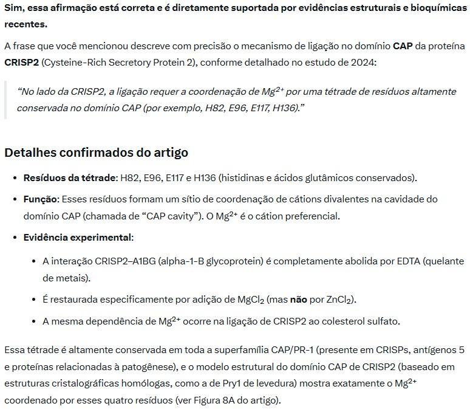
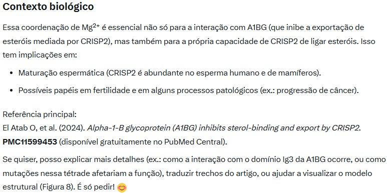
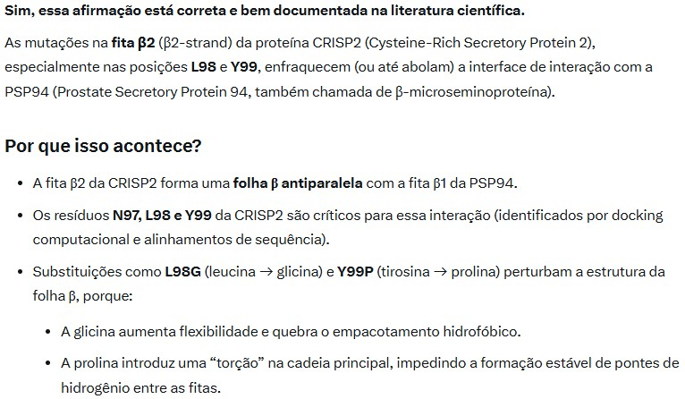
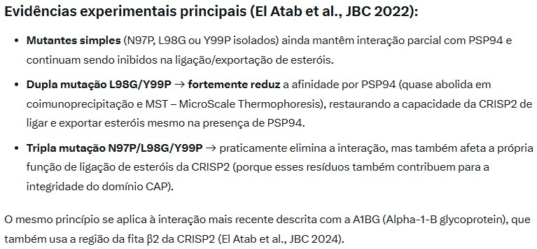
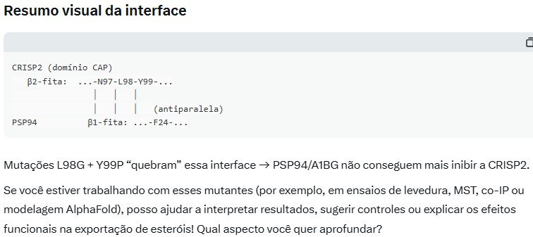
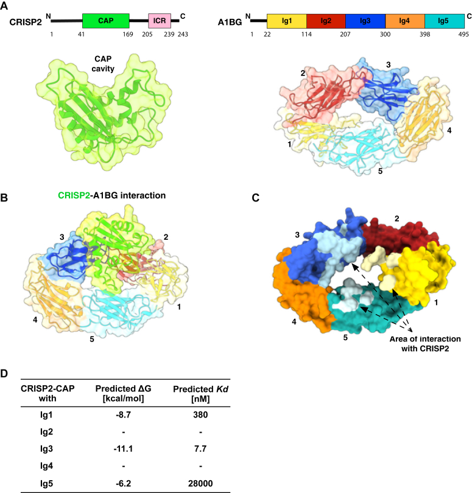

O A1BG é um gene presente em humanos e outros primatas, incluindo gorilas, que codifica a alfa-1B-glicoproteína, uma proteína plasmática.
Essa proteína pertence à família das glicoproteínas do soro, mas sua função exata ainda não é totalmente compreendida. Estudos sugerem que pode estar envolvida em processos imunológicos ou no transporte de moléculas no sangue.
a alfa-1B-glicoproteína (A1BG) inibe a ligação e o transporte de esteróis pelo proteína secretória rica em cisteína 2 (CRISP2)
1. quão conservada é a sequência do gene A1BG entre humanos e Gorilla gorilla gorilla, e variações na sequência poderiam afetar sua interação com o CRISP2?
O gene A1BG (que codifica a glicoproteína alfa-1-B, uma proteína plasmática com cinco domínios semelhantes a imunoglobulinas) é altamente conservado entre humanos (Homo sapiens) e gorilas-das-planícies-ocidentais (Gorilla gorilla gorilla), consistente com seus ~8,8 milhões de anos de divergência.
Dados disponíveis indicam ~95% de identidade na sequência proteica entre o A1BG humano (NP_570602, precursor de 495 aa) e um ortólogo previsto de gorila (XP_004061652, listado como 275 aa, provavelmente uma previsão parcial ou desatualizada de um conjunto de dados anterior).
O registro do gorila parece estar suprimido nas visualizações atuais do NCBI, e os conjuntos de dados/annotations modernos apresentam cobertura incompleta do locus gênico humano completo de ~8 kb, impedindo um alinhamento preciso de comprimento total.
No entanto, esse nível de conservação está alinhado com padrões mais amplos entre primatas: proteínas ortólogas humano-gorila geralmente apresentam 95–99% ou mais de identidade para muitos genes, com a similaridade genômica geral frequentemente citada em cerca de 98%.
A conservação em nível de nucleotídeos nas regiões codificadoras é correspondemente alta, com inserções e deleções mínimas esperadas em uma proteína multi-domínio estruturalmente conservada como a A1BG.
É improvável que variações na sequência prejudiquem de forma significativa a interação da A1BG com a CRISP2 (proteína secretória rica em cisteína 2, uma proteína com domínio CAP envolvida na ligação/exportação de esteróis, principalmente no testículo/fluido seminal).
Um estudo de 2024 (El Atab et al.) demonstrou que a A1BG humana se liga à CRISP2 humana com alta afinidade (nanomolar) (K_d ≈ 13,7 nM), inibindo suas funções de ligação e exportação de esteróis in vitro.
detalhes-chave da interação :
Mapeada principalmente para o terceiro domínio semelhante a imunoglobulina (Ig3) da A1BG (um dos cinco domínios repetidos); o domínio Ig3 isolado sozinho é suficiente para a ligação e inibição, possivelmente por meio da formação de folhas β antiparalelas intermoleculares.
No lado da CRISP2, a ligação requer a coordenação de Mg2+ por uma tétrade de resíduos altamente conservada no domínio CAP (por exemplo, H82, E96, E117, H136).


Mutações na β2-fita da CRISP2 (por exemplo, L98/Y99) enfraquecem a interface.



Visão geral do A1BG. A glicoproteína alfa-1-B (A1BG) é uma glicoproteína plasmática de aproximadamente ~54 kDa, cuja função ainda é desconhecida. Ela contém cinco domínios semelhantes aos de imunoglobulina (assemelhando-se às regiões variáveis de anticorpos) e é mais altamente expressa no fígado.
Em humanos, o A1BG liga-se à proteína secretória rica em cisteína CRISP3 com afinidade na faixa nanomolar e pode inibir o transporte de esteróis mediado por proteínas CRISP. O A1BG foi relatado como um autoantígeno na artrite reumatoide e apresenta regulação positiva em certos tipos de câncer (por exemplo, adenocarcinoma pancreático).
Sua glicosilação e seus domínios Ig repetidos sugerem papéis no reconhecimento molecular, mas nenhum ligante além da CRISP3 foi identificado até o momento.
Figura: Estrutura tridimensional prevista do A1BG humano (cinco domínios do tipo Ig, coloridos) em acoplamento com um parceiro contendo domínio CAP (em verde). O domínio Ig3 (azul) contribui com a maior interface de interação. Isso ilustra a conformação multidomínio do A1BG, relevante para qualquer modelo de ligação a pequenas moléculas.

1. expressão gênica de A1BG com Abacavir
Nenhum estudo publicado mostra alteração na transcrição de A1BG em resposta ao Abacavir.
Em tecidos humanos, o A1BG é expressado de forma constitutiva (mais abundantemente no fígado) e não foi relatado entre os genes com expressão diferencial após o tratamento com Abacavir.